מדריך למשתמש
כל מה שאפשר לעשות בלוח עברי, צעד אחר צעד
1. צעדים ראשונים
כניסה
במסך הפתיחה בוחרים כניסה עם Google. האירועים נשמרים בחשבון שלך, ויש להם עותק בטלפון כך שאפשר לעבוד גם בלי אינטרנט. רוצים רק להציץ? כניסה במצב הדגמה פותחת את היומן עם אירועים לדוגמה. במצב הזה שום דבר לא נשמר, אין סנכרון ואין תזכורות.
בפתיחה הראשונה האפליקציה מבקשת הרשאה להתראות. בלי ההרשאה הזאת התזכורות לא יופיעו. אפשר לאשר אותה גם אחר כך בהגדרות הטלפון.
ארבע תצוגות
בסרגל העליון לוחצים על שם התצוגה (למשל חודש ▾) ובוחרים חודש, שבוע, יום או אג'נדה. האפליקציה זוכרת את הבחירה.
- חודש: בכל משבצת היום העברי באותיות, היום הלועזי קטן בפינה, החג או הפרשה, זמן הדלקת הנרות ביום שישי וצאת השבת בשבת, ונקודה צבעונית לכל אירוע. מתחת ללוח מופיעים היום שנבחר והאירועים שלו. ביום של היום, האירוע הבא לפי השעה מודגש בצהוב, כמו במרקר, והרשימה נפתחת כשהוא באמצע. אירועים שכבר נגמרו מופיעים באפור.
- שבוע: שבעה טורים עם שעות. לחיצה על שעה פנויה פותחת אירוע חדש באותו יום.
- יום: התאריך העברי המלא, זמני היום ולוח שעות.
- אג'נדה: רשימה של האירועים הקרובים לפי ימים. ממשיכים לגלול כדי לראות עוד.
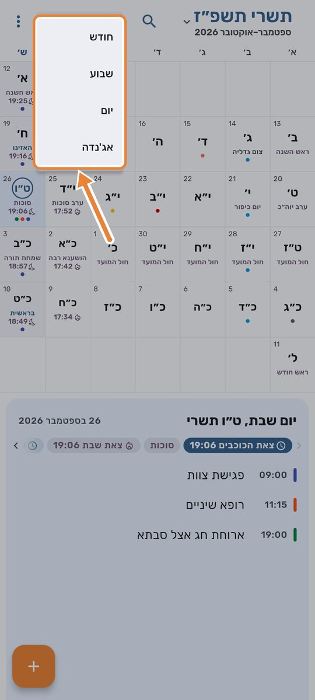
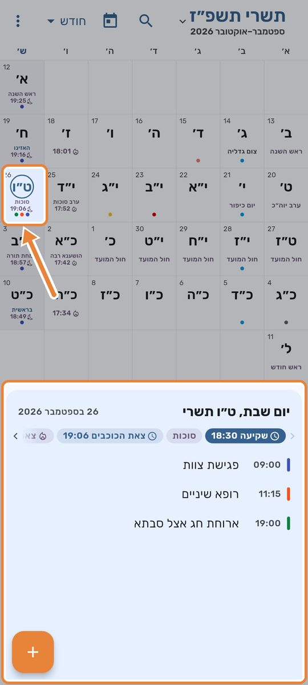
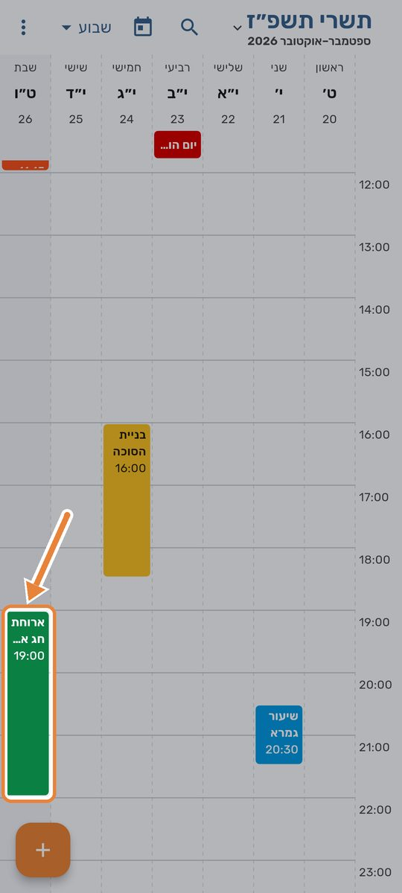
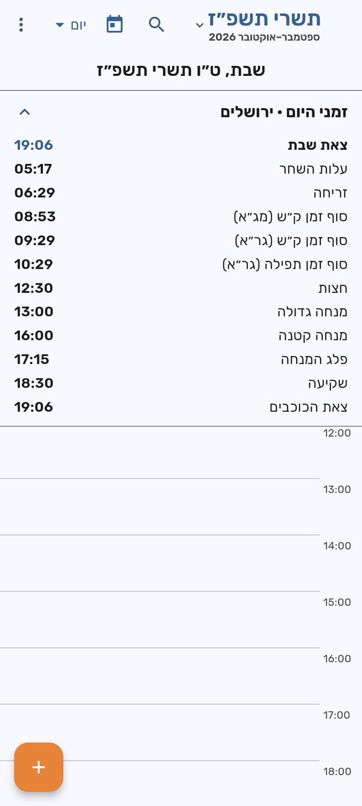
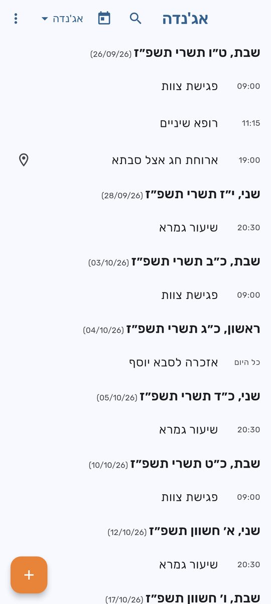
מעבר בין ימים וחודשים
- מחליקים את הלוח הצידה כדי לעבור חודש. בתצוגת שבוע ההחלקה מעבירה שבוע, ובתצוגת יום היא מעבירה יום.
- בתצוגת חודש, החלקה על החלק התחתון (היום שנבחר) מעבירה יום אחד. בסוף החודש היא ממשיכה לחודש הבא.
- החלקה כלפי מטה מסנכרנת עם Google, אם הסנכרון מופעל.
נגיעה ביום מגדילה אותו
בתצוגת חודש, כשנוגעים במשבצת היא גדלה פי שניים, כדי שיהיה קל לקרוא את הכתוב בה. כל עוד האצבע על המסך היא נשארת גדולה, וחצי שנייה אחרי שעוזבים היא חוזרת למקומה. אם מתחילים להחליק, ההגדלה מתבטלת מיד.
אם בהגדרות הנגישות של הטלפון בחרת להסיר אנימציות, אין הגדלה.
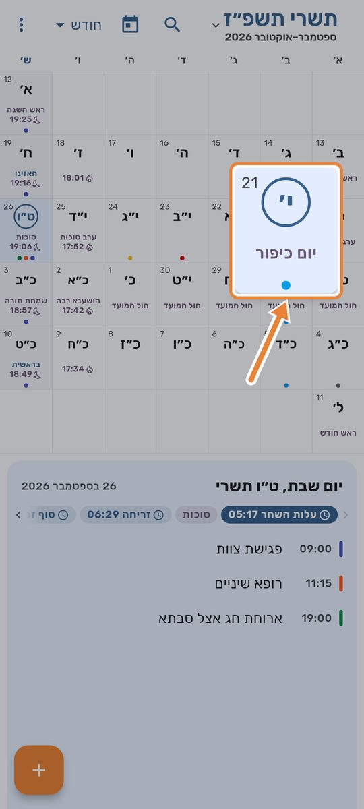
קפיצה לתאריך
לוחצים על סמל לוח השנה בסרגל העליון ובוחרים:
- היום: חוזרים להיום.
- דילוג לתאריך עברי: בוחרים יום, חודש ושנה ולוחצים אישור.
- דילוג לתאריך לועזי: בוחרים בלוח השנה של הטלפון.
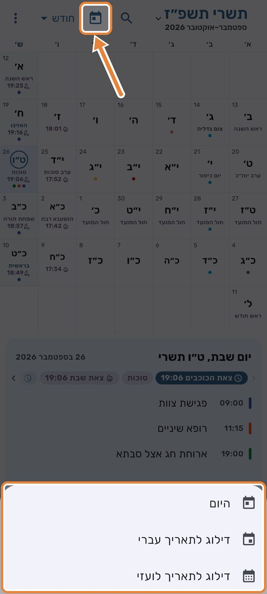
תצוגה לועזית
לוחצים על שם החודש למעלה ובוחרים תצוגה לועזית, או מפעילים בהגדרות את תצוגה לועזית. אז החודשים הם החודשים הלועזיים, והיום הלועזי הוא המספר הגדול במשבצת. תצוגה עברית מחזירה את הלוח העברי.
חיפוש
לוחצים על הזכוכית המגדלת ומקלידים. החיפוש מוצא אירועים לפי הכותרת, התיאור או המיקום, וכל מילה שהקלדת צריכה להופיע. קודם מופיעים האירועים הקרובים ואחריהם אלה שכבר עברו. באירוע חוזר מופיע המופע הבא שלו. לחיצה על תוצאה מעבירה לאותו יום. החיפוש עובד גם בלי אינטרנט.
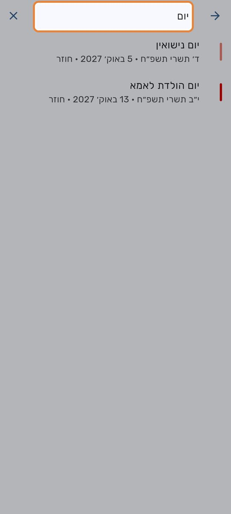
גודל טקסט
בהגדרות, תחת גודל טקסט, בוחרים 100%, 110%, 120%, 130% או 140%. השינוי נראה מיד. הבחירה מתווספת לגודל הגופן שבהגדרות הטלפון, ובתצוגת חודש גם המשבצות גדלות יחד עם הטקסט.
אם הגופן בטלפון כבר גדול, ההגדלה הכוללת נעצרת ב-170%, כדי שהמסכים לא יהיו צפופים מדי.
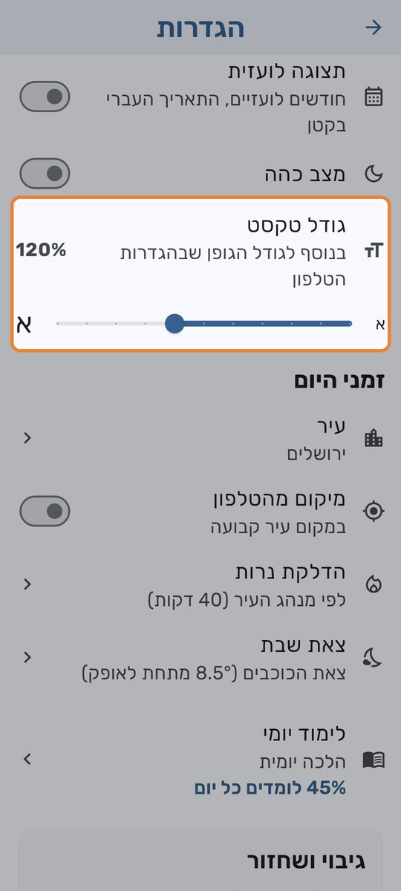
מצב כהה
בהגדרות, מצב כהה. כל עוד לא שינית את ההגדרה, האפליקציה בהירה או כהה לפי הטלפון.
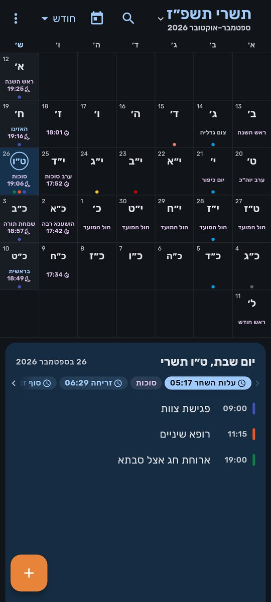
2. אירועים
אירוע חדש
לוחצים על כפתור הפלוס הכתום ובוחרים אירוע חדש. האירוע נפתח ביום שמסומן כרגע בלוח.
- כותרת, ואז כל היום (מופעל מראש) או שעת התחלה ושעת סיום.
- תאריך עברי: לוחצים כדי לבחור יום, חודש ושנה עבריים. אפשר גם לבחור לפי תאריך לועזי בסמל לוח השנה שלידו. אז האפליקציה שואלת אם זה היה לפני השקיעה או אחריה, כי היום העברי מתחיל בשקיעה.
- תזכורות: בזמן האירוע, 10 דקות, 30 דקות, שעה, יום או שבוע לפני, או מותאם אישית. אפשר עד חמש תזכורות לאירוע. באירוע של כל היום התזכורת נמדדת מ-09:00 באותו יום.
- צבע: אחד מ-11 הצבעים של Google Calendar.
- מיקום ותיאור.
שומרים ב-✓ למעלה.
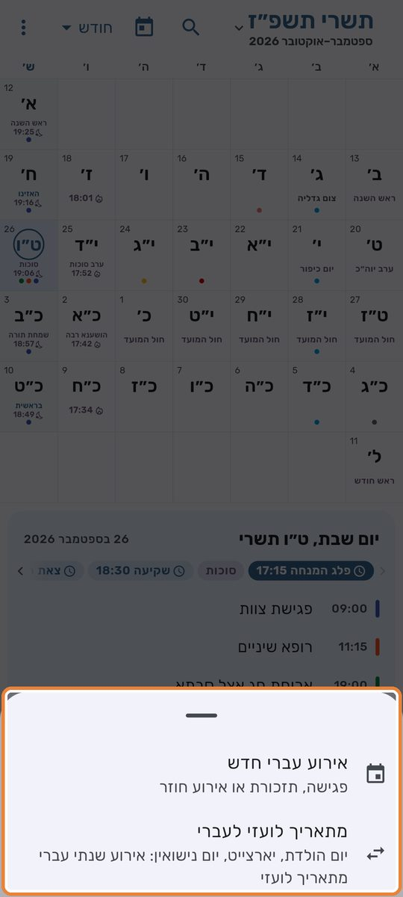
אירוע חוזר לפי התאריך העברי
בשורת החזרה בוחרים: ללא חזרה, כל שנה (עברי), כל שנה (לועזי), כל חודש (עברי), כל חודש (לועזי), כל שבוע או כל יום.
- אדר בשנה מעוברת: לאירוע שנתי עברי באדר בוחרים אם בשנה מעוברת הוא יחול באדר א׳, באדר ב׳ או בשניהם. ברירת המחדל היא אדר ב׳. תאריך שנקבע מלכתחילה באדר א׳ נשאר באדר א׳.
- יום ל׳: באירוע ב-ל׳ בחודש בוחרים מה קורה בשנה שבה אין לחודש יום ל׳: א׳ בחודש הבא (ברירת המחדל) או כ״ט בחודש.
- עד תאריך: אפשר לקבוע מתי הסדרה נגמרת, או להשאיר ללא תאריך סיום.
- בחזרה לועזית, 29 בפברואר יחול ב-28 בפברואר בשנה שאינה מעוברת, ויום שלא קיים בחודש (כמו 31) יחול ביום האחרון של החודש.
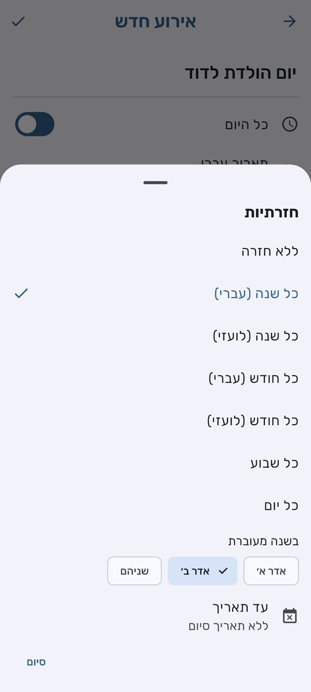
פרטי אירוע, מיקום וקישורים
בתצוגת חודש, לחיצה על אירוע ברשימה שמתחת ללוח פותחת את הפרטים שלו: התאריך העברי והלועזי, השעה, התיאור, המיקום והמשתתפים. בשבוע, ביום ובאג'נדה לחיצה על אירוע פותחת ישר את העריכה.
- מיקום: הכפתורים פתח ב-Google Maps ונווט עם Waze. אם במיקום יש קישור לפגישה (Zoom, Meet), מופיע קישור לחיץ במקום המפות.
- מספר טלפון בכותרת, בתיאור או במיקום הוא לחיץ: חיוג, וואטסאפ או העתקה.
- כתובת מייל: שליחת מייל או העתקה. קישור נפתח בדפדפן.
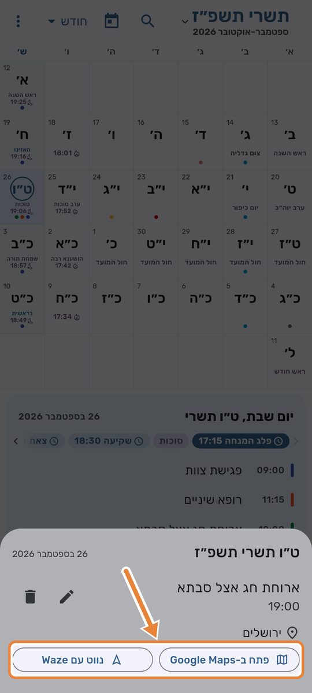
משתתפים
בעורך, בשדה הוספת משתתף לפי מייל, מוסיפים כתובות. Google Calendar שולח להם הזמנה במייל אחרי הסנכרון, ולכן צריך שהסנכרון יהיה מופעל. ליד כל משתתף מופיעה התשובה שלו: אישר/ה הגעה, לא מגיע/ה, אולי או טרם השיב/ה. אירוע חוזר לפי התאריך העברי נשלח ל-Google כמופעים נפרדים, ולכן כל משתתף מקבל הזמנה לכל מופע.
עריכה ומחיקה
אפשר למחוק אירוע מכל תצוגה: בתצוגת חודש מסמל הפח בפרטי האירוע, ובכל תצוגה מסמל הפח בראש מסך העריכה. לפני המחיקה האפליקציה מבקשת אישור, ומחיקה אי אפשר לבטל.
כשעורכים או מוחקים מופע של סדרה, האפליקציה שואלת על מה להחיל את הפעולה: מופע זה בלבד, מופע זה והבאים אחריו או כל הסדרה.
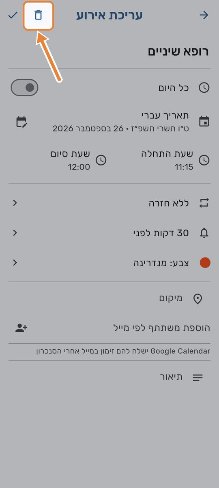
3. תאריך משמעותי
הדרך המהירה להפוך תאריך לידה, פטירה או נישואין לועזי לאירוע שנתי בתאריך העברי. לוחצים על כפתור הפלוס ובוחרים תאריך משמעותי.
- בוחרים סוג: יום הולדת, יארצייט, יום נישואין או אחר.
- כותבים שם.
- בוחרים את התאריך הלועזי המקורי: יום, חודש ושנה.
- עונים על מתי ביום?: לפני השקיעה, אחרי השקיעה או לא יודע. היום העברי מתחיל בשקיעה, כך שלידה בערב שייכת כבר לתאריך העברי של מחר. לא יודע נחשב כמו לפני השקיעה.
- בודקים בתצוגה המקדימה מה היה התאריך העברי ומתי הוא יחול השנה.
- אפשר לסמן להוסיף גם את התאריך הלועזי כדי לקבל גם אירוע שנתי בתאריך הלועזי.
- לוחצים יצירת אירוע.
יארצייט של מי שנפטר באדר בשנה רגילה יחול בשנה מעוברת באדר א׳, לפי המנהג המקובל.
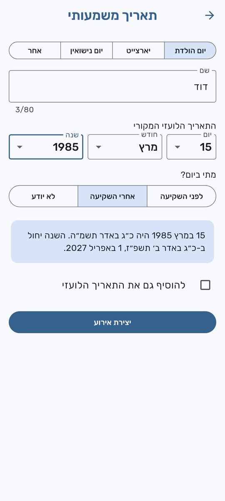
4. חגים, פרשה וזמני היום
חגים ופרשת השבוע
הלוח מציג חגים, ערבי חג, חול המועד, צומות, ראשי חודשים, ימים לאומיים וימי זיכרון, ובשבת את פרשת השבוע. במשבצת של החודש מופיע רק הדבר החשוב ביותר באותו יום, בקיצור. השמות המלאים מופיעים בשורה שמתחת ללוח. בהגדרות, לוח ארץ ישראל מופעל מראש. כשמכבים אותו, הלוח עובר ללוח חו״ל, עם יום טוב שני של גלויות וסדר הפרשות של חו״ל.
זמני היום
בתצוגת יום יש חלונית זמני היום: עלות השחר, זריחה, סוף זמן ק״ש (מג״א ולפי הגר״א), סוף זמן תפילה, חצות, מנחה גדולה, מנחה קטנה, פלג המנחה, שקיעה וצאת הכוכבים. ביום שישי מתווספת הדלקת נרות, ובשבת צאת השבת. בתצוגת חודש הזמנים מופיעים בשורה שמתחת ללוח, והזמן הקרוב ביותר ראשון.
בהגדרות, בחלק זמני היום:
- עיר: 27 ערים בישראל ועוד ניו יורק, לוס אנג׳לס, לונדון, פריז ואנטוורפן. ברירת המחדל היא ירושלים. הזמנים מחושבים לגובה פני הים, כמו בלוחות המקובלים.
- מיקום מהטלפון: במקום עיר קבועה, לפי המיקום המשוער של הטלפון.
- הדלקת נרות: לפי מנהג העיר (למשל 40 דקות בירושלים), או 18, 20, 30 או 40 דקות לפני השקיעה.
- צאת שבת: צאת הכוכבים (8.5° מתחת לאופק), או 72 דקות אחרי השקיעה (ר״ת).
הזמנים מחושבים אוטומטית, וייתכנו הבדלים של כמה דקות לעומת לוחות אחרים. לעניין הלכתי כדאי להסתמך על לוח מוסמך של המקום (ראו תנאי שימוש).
5. הלכה יומית
בכניסה הראשונה בכל יום נפתחת ההלכה של היום מקיצור שולחן ערוך. הלימוד במחזור שנתי, כך שמסיימים את כל הקיצור בכל שנה. בראש החלון מופיעה ההקדשה של היום, והיא נשארת במקומה כשגוללים את הטקסט.
- בפעם הראשונה בוחרים שיננתי, תמשיך להציג לי או אל תציג לי יותר. מאז והלאה יש כפתור שיננתי.
- בהגדרות, בחלק הלכה יומית: המתג הצגה בכניסה הראשונה ביום מפעיל או מכבה את ההצגה, והשורה ההלכה של היום פותחת את ההלכה מתי שרוצים.
- האפליקציה מורידה מראש את ההלכות של שבעת הימים הקרובים, כך שאפשר לקרוא גם בלי אינטרנט.
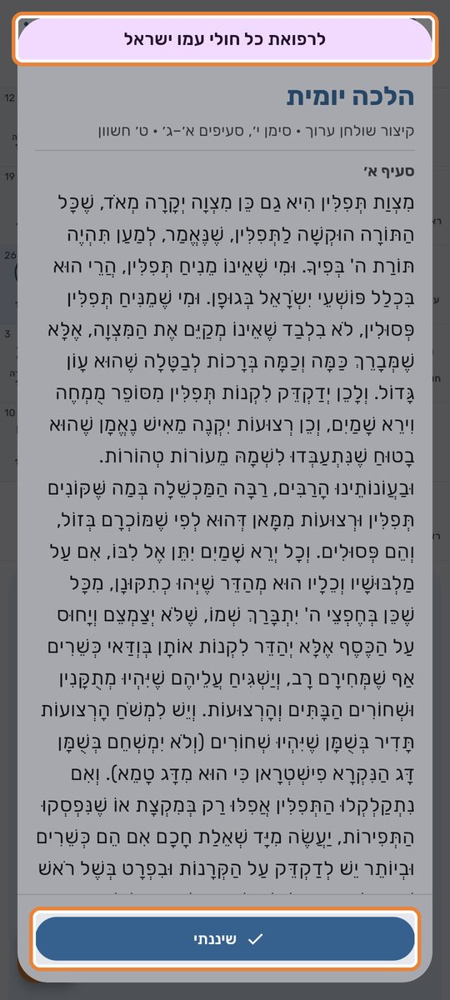
6. סנכרון עם Google Calendar
בהגדרות, בכרטיס סנכרון עם יומן Google, מפעילים את המתג. Google מבקש רק אז אישור לגשת ליומן. הסנכרון הוא בשני הכיוונים, עם היומן הראשי בחשבון: מה שנוצר כאן מופיע ב-Google, ולהפך. כשאותו אירוע השתנה בשני המקומות, השינוי האחרון קובע.
- מתי מסתנכרן: כשפותחים את האפליקציה, כחצי דקה אחרי שינוי, כל 6 שעות ברקע, ובהחלקה של הלוח כלפי מטה. בכרטיס יש גם כפתור סנכרן עכשיו, והוא מראה גם מתי היה הסנכרון האחרון.
- אירוע חוזר עברי מופיע ב-Google כמופעים נפרדים, כי ל-Google אין חזרה לפי התאריך העברי. אירועים שנתיים וחודשיים נשלחים חמש שנים קדימה, ושבועיים ויומיים שנתיים קדימה. הטווח מתעדכן מעצמו עם הזמן.
- עריכה של מופע אחד ב-Google הופכת אותו לאירוע נפרד. מחיקה של מופע ב-Google מדלגת על התאריך הזה בסדרה.
- החגים והפרשה לא נשלחים ל-Google.
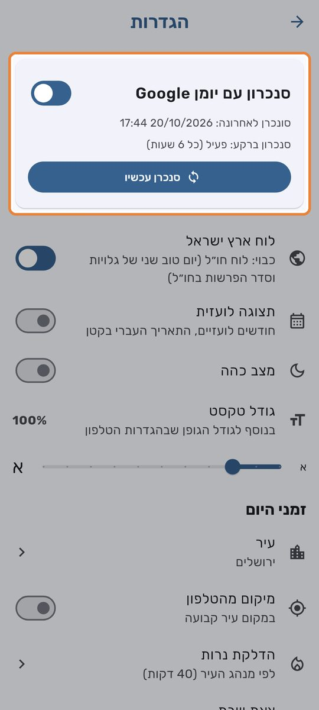
7. גיבוי ושחזור
האירועים כבר שמורים בחשבון שלך, וגם ב-Google אם הסנכרון מופעל. הגיבוי הוא עוד עותק ידני שנשאר אצלך. בהגדרות, בכרטיס גיבוי ושחזור:
- ייצוא: שומרים קובץ גיבוי של כל האירועים במקום שבוחרים.
- שיתוף: שולחים את קובץ הגיבוי בוואטסאפ, במייל, ל-Google Drive וכדומה.
- שחזור: בוחרים קובץ גיבוי. האירועים מהקובץ מתווספים לקיימים. אירוע שכבר קיים מתעדכן לפי הקובץ, ושום אירוע לא נמחק.
קובץ הגיבוי אינו מוצפן, לכן כדאי לשמור אותו במקום פרטי.
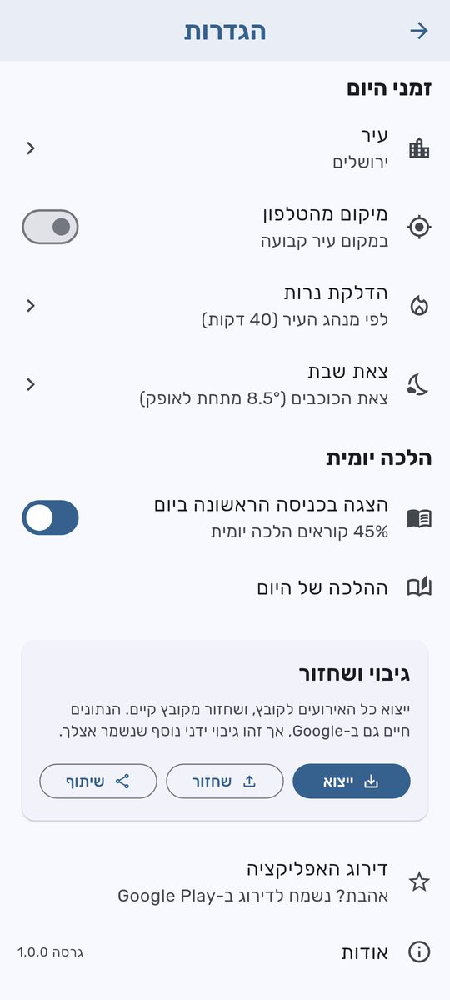
8. שאלות נפוצות
למה האירוע ביום אחר ממה שציפיתי?
היום העברי מתחיל בשקיעה. אם הלידה, הפטירה או החתונה היו בערב, התאריך העברי הוא של היום שאחרי. במסך תאריך משמעותי, או בבחירה לפי תאריך לועזי בעורך, עונים אחרי השקיעה.
אני לא מקבל תזכורות.
בודקים שאישרת לאפליקציה הרשאת התראות (בהגדרות הטלפון, תחת האפליקציות, לוח עברי, התראות), ושלאירוע יש תזכורת. במצב הדגמה אין תזכורות.
הטקסט קטן מדי בשבילי.
בהגדרות בוחרים גודל טקסט גדול יותר, עד 140%. בתצוגת חודש אפשר גם לגעת ביום ולהחזיק, והמשבצת תגדל פי שניים.
אירוע לא הופיע ב-Google Calendar.
בודקים בהגדרות שהסנכרון מופעל ולוחצים סנכרן עכשיו. אם יש שגיאה, היא מופיעה בכרטיס הסנכרון. הסנכרון עובד רק מול היומן הראשי בחשבון.
אני בחו״ל. למה החג מופיע רק יום אחד?
בהגדרות מכבים את לוח ארץ ישראל, ואז מופיע גם יום טוב שני של גלויות.
הזמנים לא מתאימים לעיר שלי.
בהגדרות, בחלק זמני היום, בוחרים עיר או מפעילים מיקום מהטלפון. אפשר גם לשנות את מספר הדקות של הדלקת הנרות ואת השיטה של צאת השבת.
אפשר להשתמש בלי חשבון Google?
במצב הדגמה כן, אבל שום דבר לא נשמר. כדי לשמור אירועים צריך להיכנס עם Google. הסנכרון עם Google Calendar עצמו לא חובה.
איך מתנתקים?
בתפריט ⋮ למעלה בוחרים התנתקות.
יש לי רעיון או בעיה.
נשמח לשמוע: natanor.kalfa@gmail.com. ואם האפליקציה עוזרת לך, אפשר לדרג אותה בהגדרות, בדירוג האפליקציה.